振ってからシュッと。グランスキンウォーターの使いどころ
コフレの限定特典から定番になった、2層式のミスト化粧水グランスキンウォーター。今年もグランスキン基礎セットのおまけに入っています。スキンケアの最後から日中まで、使う場面をまとめました。
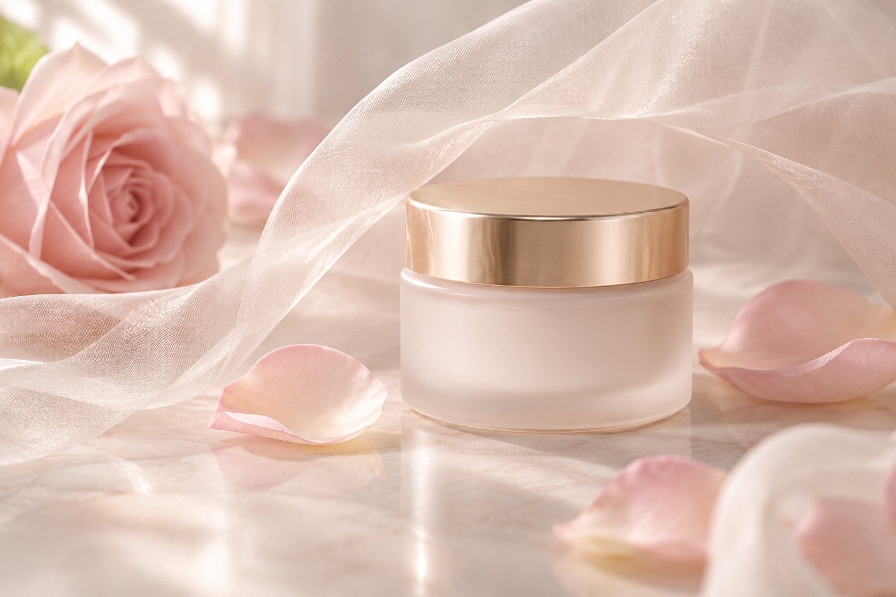
混ぜても使えるお守りクリーム。シェリースキン プロテクションクリーム
肌の上にヴェールをつくるイメージの、守りながら整えるクリーム。今年はシェリースキンのコフレにおまけとして入っています。使う順番と、ローション類に混ぜる使い方をお話しします。
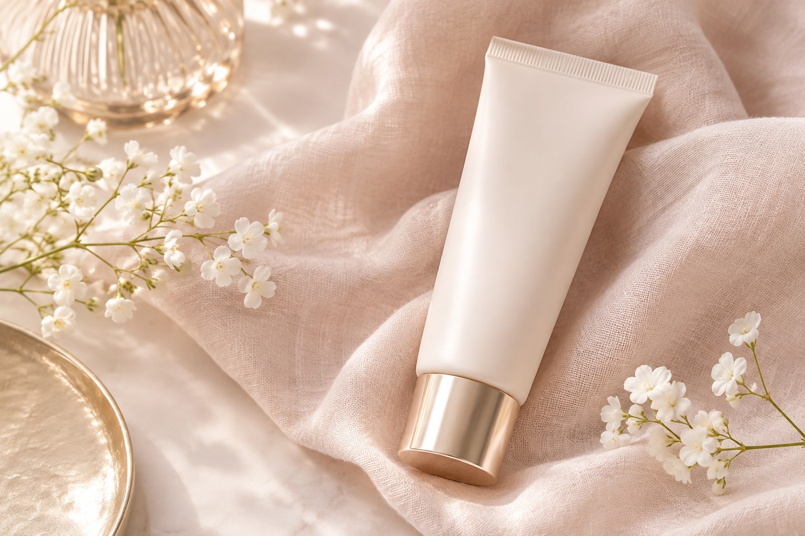
肌がゆらぐ日のお守りに。グランスキン エンパイアのお話
「一家に1本」「お守り」と呼ばれることも多いグランスキン エンパイア。今年はクレアスキンのコフレにおまけとして入っています。使う順番と量、クリームとの付き合い方をお話しします。
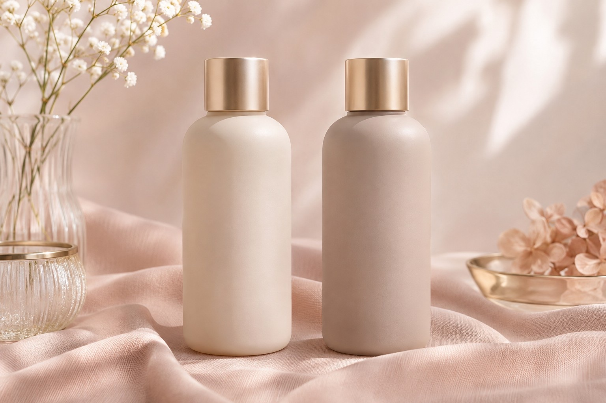
「特別処方」って何が違うの？コフレといつもの品のお話
同じクレアやシェリーでも、コフレは特別処方です。いつもの品と何が違うのか、どちらをどう考えるといいのかをお話しします。

今年のコフレに共通する中身。クロトーセルって何？
今年のコフレの基礎スキンケアには、共通して入っている成分があります。名前の難しいクロトーセルなどを、成分名の意味を中心にお話しします。
コフレの受付を終えました。これからの流れをご案内します
クリスマスコフレの受付は11月8日で終了しました。お申し込みくださった方へのお礼と、当選のご連絡からお渡しまでの流れをまとめました。
全国900箱だけのM.Watanabe。初登場のクレンジングと洗顔付き
リアボーテの最高峰M.Watanabeの化粧水・美容液・クリームに、初登場のクレンジングと洗顔が付いて68,200円です。全国900箱のみで、本日11月8日（日）が締切です。
本日締切。コフレで迷った時の選び方
クリスマスコフレの受付は本日11月8日（日）までです。7種類で迷っている方へ、今の肌や予定から選ぶ時の考え方をまとめました。
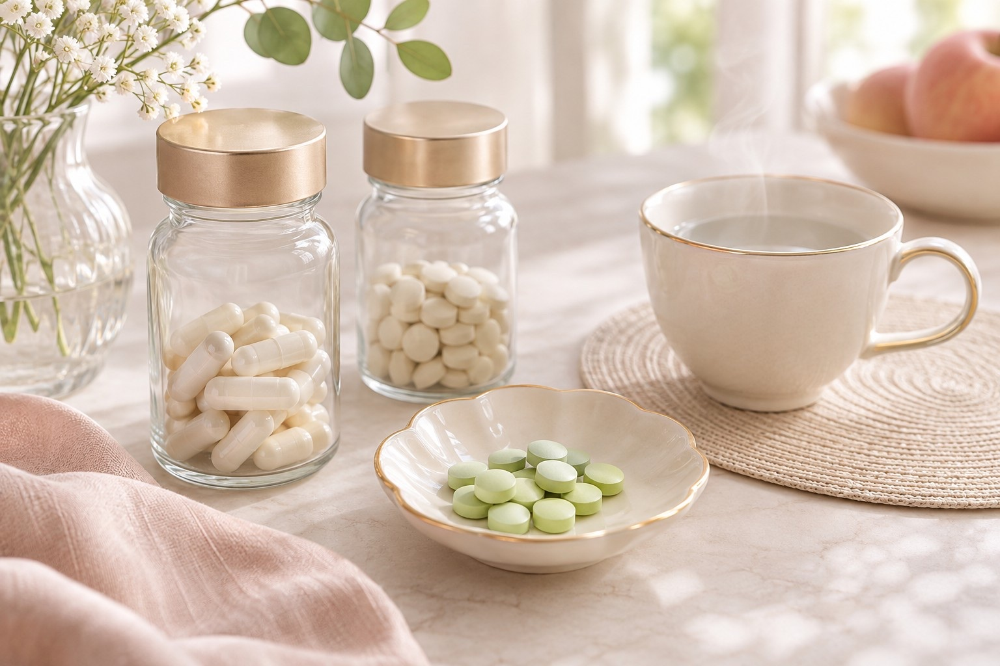
再販予定なしのおまけ付き。エキスパートスタイル2個と健美菜タブレット
配合を見直したエキスパートスタイル2個に、限定品の健美菜タブレット90粒が付いて18,360円です。本日11月8日（日）が締切です。
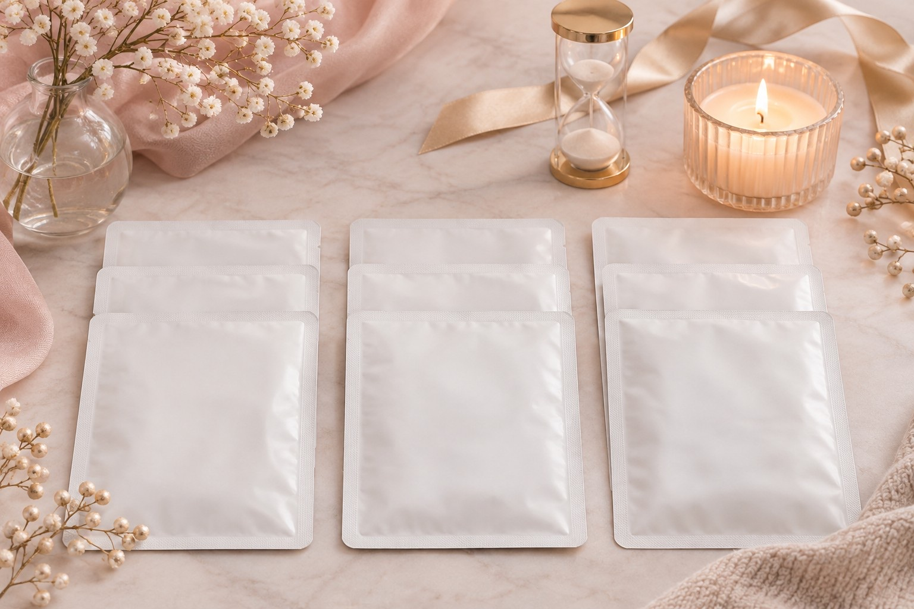
3日続けて使う9枚のパック。ヴェリテのパックセットで年末年始の前に
ヴェリテ・ヴェリテP 各3枚に、M.Watanabeのマスク3枚を合わせた9枚セット。1枚ずつそろえるより2,310円お得な19,800円です。締切は11月8日（日）です。
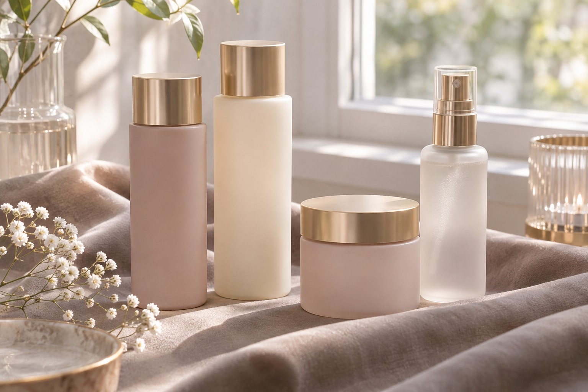
中身で勝負のグランスキン基礎セット。おまけはあえて控えめに
今年のグランスキン基礎3品は、おまけより処方にこだわったセットです。いつもの3品と同じ49,500円で、定価9,350円のグランスキンウォーターが付いてきます。締切は11月8日（日）です。
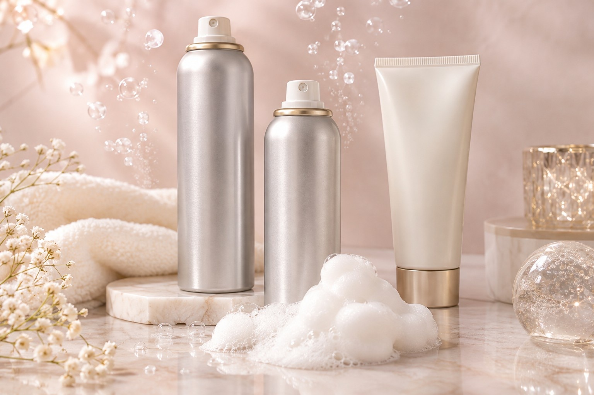
おまけは発売前のボディクリーム。エキスパートローション2本セット
限定処方のエキスパートローション2本に、まだ発売されていないボディ用クリーム「ディゾブレイク」80gが付いて18,700円です。締切は11月8日（日）です。
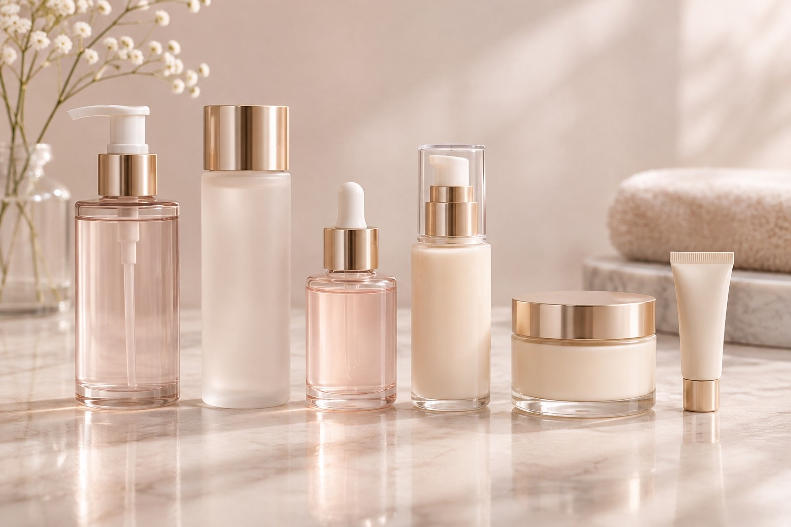
今年のクレアは別格。特別処方の5点セットとエンパイア
クレアスキン5点がコフレだけの特別処方に。いつもの5品と同じ54,450円で、定価17,600円のグランスキン エンパイアが付いてきます。締切は11月8日（日）です。
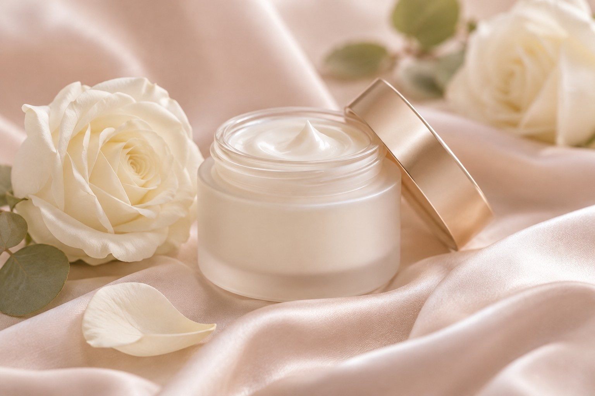
ゆらぎやすい冬の肌に。シェリースキン5点セットとプロテクションクリーム
シェリースキン5点がコフレだけの特別処方に。定価13,750円のプロテクションクリーム30gが付いて50,160円です。締切は11月8日（日）です。
2026年のクリスマスコフレ、全7種をまとめてご紹介します
今年のリアボーテ限定コフレは「CLOTHO CELL」。全7種類の中身と価格、お申し込みの流れを一度にまとめました。締切は11月8日（日）です。
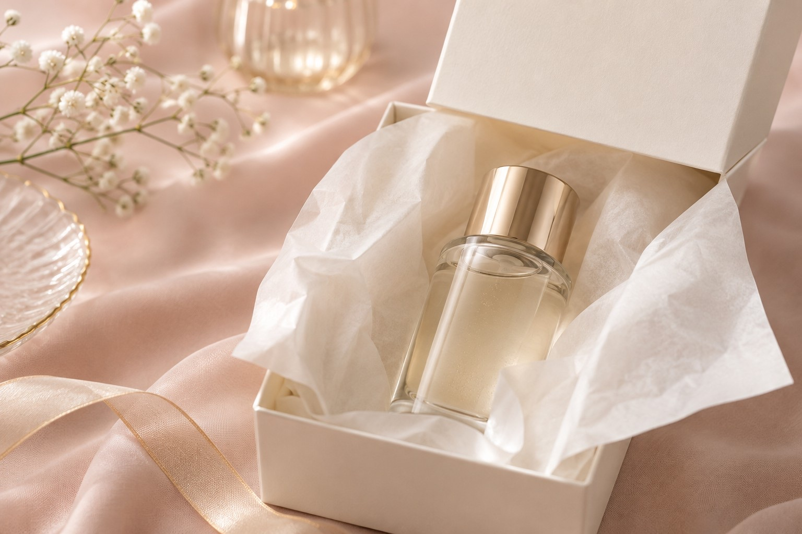
コフレから始める、初めてのリアボーテ
リアボーテをまだ使ったことがない方にとって、コフレはひとつのきっかけになります。一式でそろえる選び方と、パックから試す選び方の2つをお話しします。締切は11月8日（日）です。

コフレ受付中です。お申込みの方法と11月8日の締切
2026年のリアボーテのコフレ、ご予約を受け付けています。お申込みはLINEかインスタのDMで、締切は11月8日（日）です。送っていただく内容と、その後の流れをまとめました。
コフレの「抽選」ってどういうこと？多めに申し込む考え方
コフレは数量限定の抽選です。申し込んだ分すべてではなく、当選した分だけのお支払いになります。多めに申し込むとはどういうことか、例を挙げて整理しました。
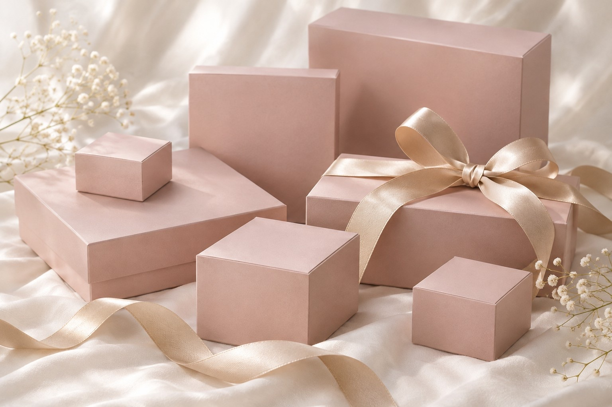
今年のコフレの全貌が出ました。「CLOTHO CELL」と全7種のこと
2026年のリアボーテのコフレは、シリーズ名「CLOTHO CELL（クロトーセル）」、全7種です。何が入っているのかを一覧にまとめました。数量限定の抽選で、ご予約の締切は11月8日（日）です。
そもそもコフレって何？デパコスとサロン専売の違い
毎年この時期によく聞く「コフレ」。もともとの意味や、デパコスのコフレとサロン専売のコフレの違いを整理しました。どちらが良いという話ではなく、選ぶときの手がかりとしてお読みください。
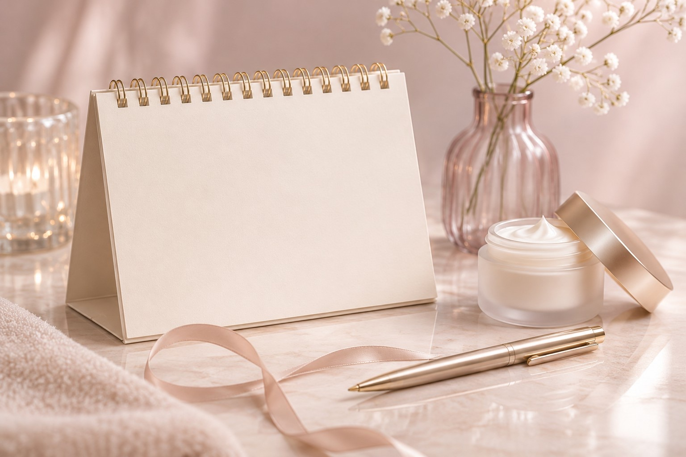
年末の予定から逆算する、肌の準備
忘年会に帰省、久しぶりの方に会う年末年始。予定が決まっているなら、肌の準備も逆算できます。今から直前までにしておきたいことを、時期ごとに整理しました。
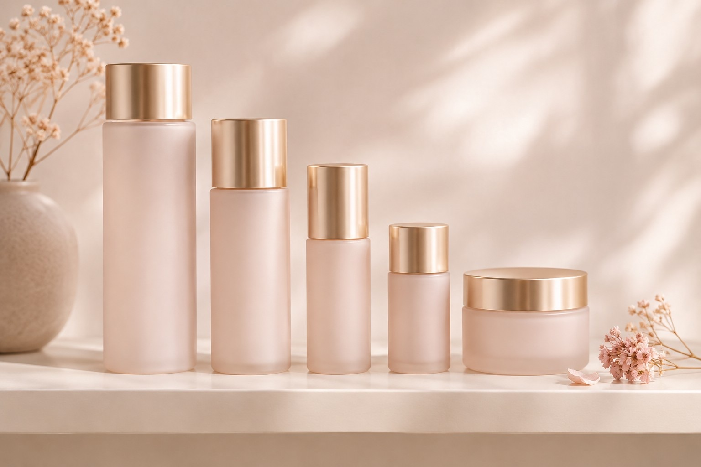
「ライン使い」は何のため？全部そろえなくてもいい理由
同じシリーズでそろえる「ライン使い」。よく聞くけれど、本当に必要なのか迷いますよね。そろえる良さと、無理にそろえなくていい場面の両方をお話しします。
美容液はどう選ぶ？悩みとの合わせ方
種類が多くて、何を選べばいいのか迷いやすい美容液。まずは一番気になることをひとつ決めると、ぐっと選びやすくなります。悩みに合わせた見方と、使うときのコツをお話しします。
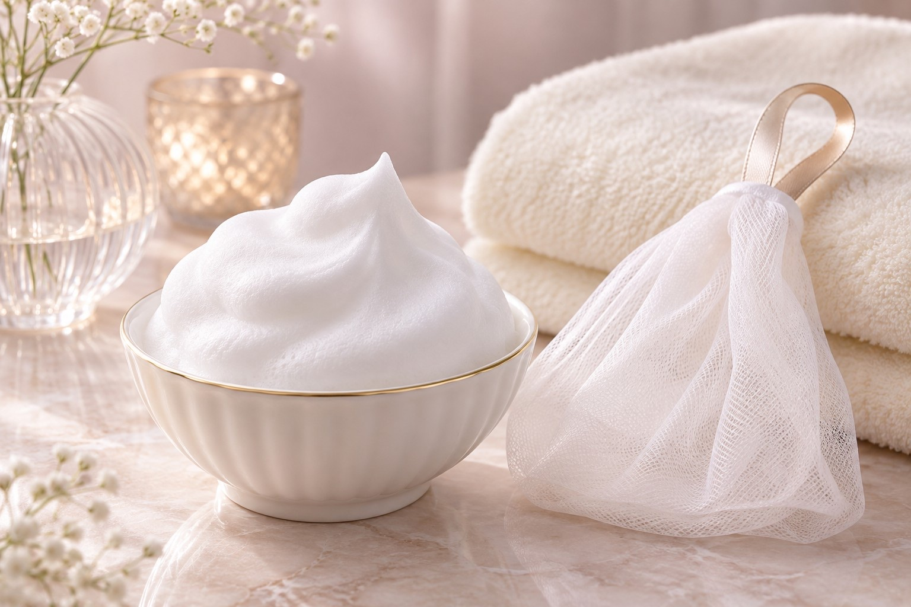
洗顔の泡の話。固めの泡と、すすぎで変わること
毎日の洗顔、泡の固さとすすぎを意識したことはありますか。肌に触れる時間が毎日ある分、少しの違いが積み重なります。泡立て方とすすぎのコツをお話しします。
11月に入る前に。肌の変わり目の見つけ方と整え方
11月に入ると、気温も湿度も下がって暖房の出番も増えてきます。困る前に今の肌を確かめて、少しだけ整えておきませんか。洗顔のあとにできる簡単なチェックと、今のうちにしておきたいことをお話しします。
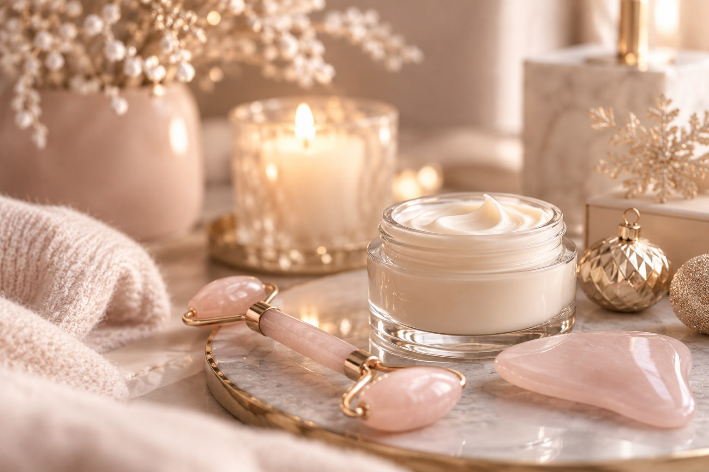
年末に向けて。肌疲れ・くすみをやさしくケア
忙しさが増してくるこれからの季節、鏡の中の自分が少し疲れて見えることはありませんか。肌疲れやくすみの理由と、毎日できるやさしいケアをご紹介します。
中目黒の秋の楽しみ。紅葉さんぽ
春の桜で知られる中目黒ですが、秋の街もまた素敵です。少しずつ色づく木々を眺めながらのんびり歩く、三枝の休日の過ごし方をお届けします。
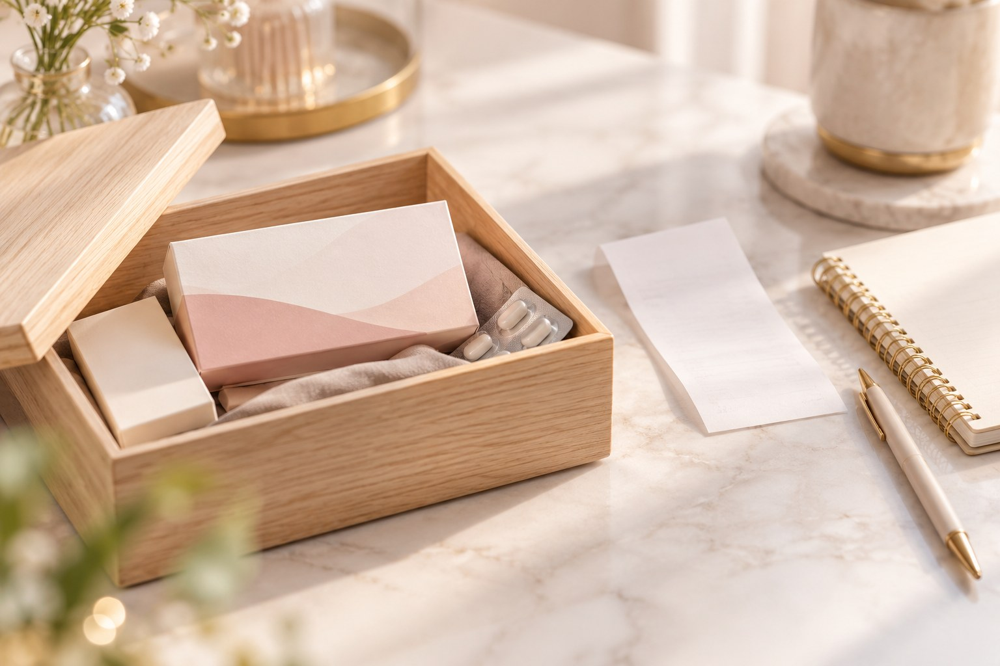
知っておきたい、セルフメディケーション税制の基礎
ドラッグストアで買った市販薬が、税金の控除につながることがあるのをご存じですか。セルフメディケーション税制の仕組みと、今からできるレシート保管のコツをまとめました。
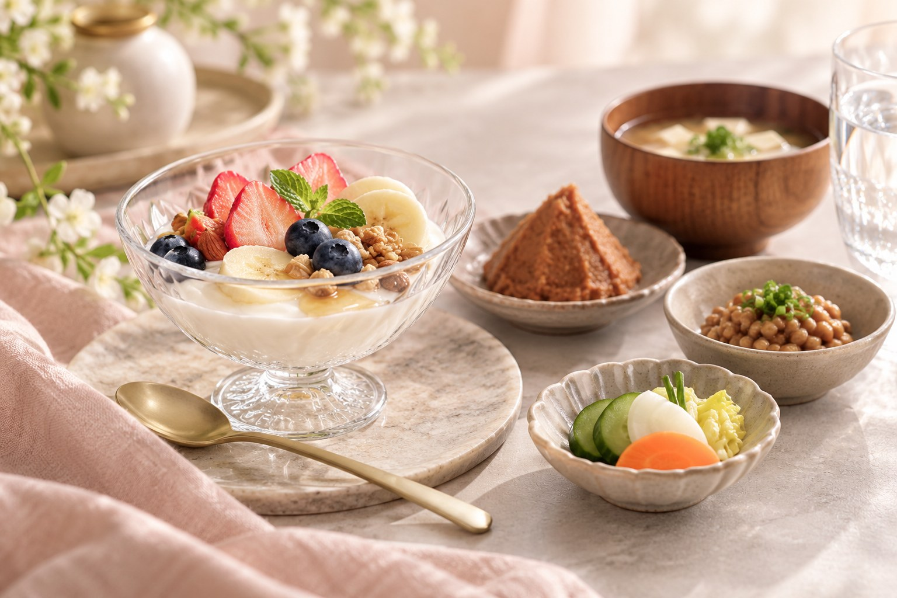
腸活と美肌。内側から整えるはなし
「腸は肌の鏡」といわれることがあります。おなかの調子と肌の関係、そして毎日の食事で無理なく続けられる腸活のコツをやさしくまとめました。
冬本番前の"血めぐり"美容。温活と肌
手足が冷えやすくなるこの季節。体の冷えは、肌の血色やうるおいにも関わっています。冬本番の前に始めたい、毎日の温活と巡りのお話です。
秋は抜け毛が増える？頭皮のやさしいケア
秋になると、排水口やブラシに残る髪の毛が気になりませんか。季節による抜け毛の理由と、今日からできる洗い方・乾かし方のコツをまとめました。
そろそろ年末調整。いまのうちに確認したいこと
秋が深まると、会社員の方にはそろそろ年末調整の季節がやってきます。毎年なんとなく書いている書類も、仕組みを知ると安心です。いまのうちに準備しておきたいことをまとめました。
マイブームはせいろ蒸し。簡単あったか和食
最近の私のマイブームは、せいろ蒸し。野菜を切って並べて蒸すだけなのに、ふたを開けた瞬間のうれしさは格別です。忙しい日でも続けられる、あったか和食のお話です。
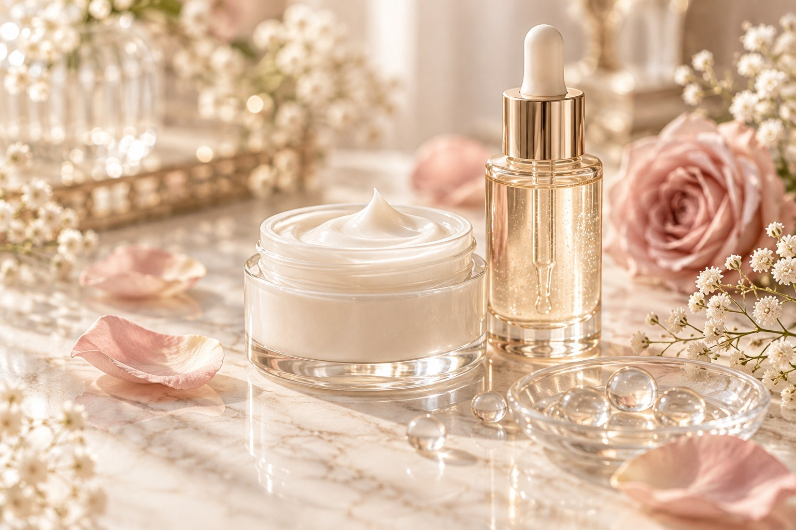
よく聞く「セラミド」って何？うるおいを守る仕組み
化粧品でよく目にする「セラミド」。なんとなく良さそうだけれど、実はよく分からないという方も多いのでは。肌のうるおいを守る仕組みと、選び方のポイントを解説します。
お風呂時間を、自分をいたわる時間に
涼しくなってくると、湯船につかる時間が恋しくなります。お湯の温度、好きな香り、お風呂上がりの保湿。私がお休みの日に大切にしている、お風呂時間の過ごし方をお話しします。
睡眠と肌の"ゴールデンタイム"の本当のところ
「夜10時から2時は肌のゴールデンタイム」と聞いたことはありませんか。実はいま、時間帯よりも眠りはじめの深さが大切と言われています。忙しい毎日でもできる、肌のための眠り方をお話しします。
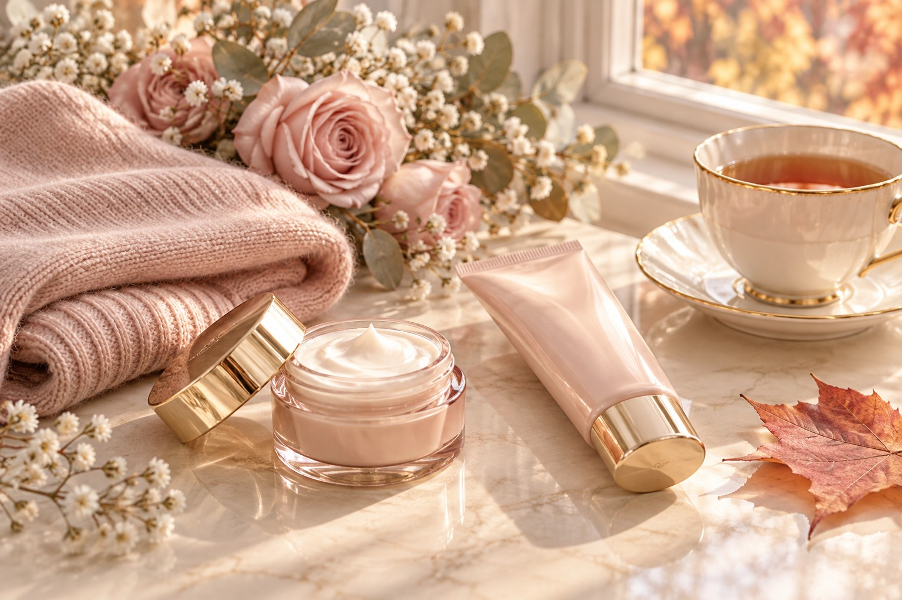
手元は年齢が出やすい。秋からのハンドケア
顔のお手入れは丁寧でも、手元はつい後回しになりがち。空気が乾き始める秋こそ、ハンドケアを見直すタイミングです。手洗いのあと、夜のひと手間、外出時の工夫をまとめました。
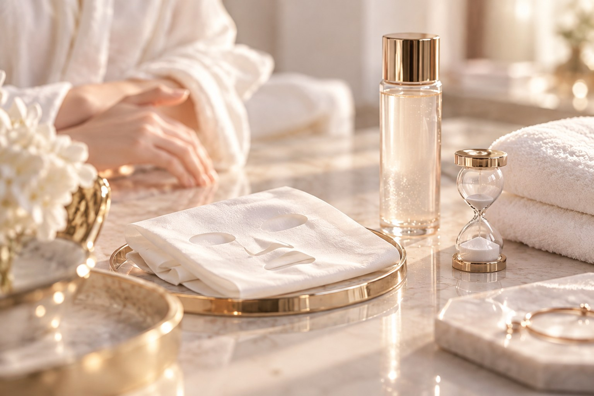
シートマスクの正しい使い方。長く貼るのは逆効果？
「長く貼るほどうるおう」と思っていませんか。実はシートマスクは、貼りすぎるとかえって乾燥につながることも。時間の目安、使うタイミング、そのあとの保湿までのコツをまとめました。
秋の味覚でととのえる。最近よく食べているもの
涼しくなってくると、自然と手が伸びるさつまいもやきのこ。最近のマイブームは、旬の食材をシンプルに味わうことです。季節の恵みでからだをととのえる、ささやかな楽しみをお話しします。
顔だけで終わらせない。首・デコルテのお手入れ
顔は丁寧にケアしていても、首やデコルテはつい後回しに。実は年齢が出やすい場所だからこそ、毎日の保湿と紫外線対策が大切です。今日から続けやすいお手入れのコツをまとめました。
エアコン乾燥から肌を守る、小さな習慣
暖房を使い始めるこれからの季節、室内の空気は想像以上に乾いています。加湿やこまめな保湿など、今日からできる小さな習慣で、肌のうるおいを守りましょう。
美容費を賢く。ポイント・キャッシュレスの使い分け
スキンケアやコスメ、日々の美容にかかるお金。我慢して削るより、払い方を少し整えるだけで、気持ちよく続けやすくなります。ポイントやキャッシュレス、固定費の見直しの考え方をまとめました。
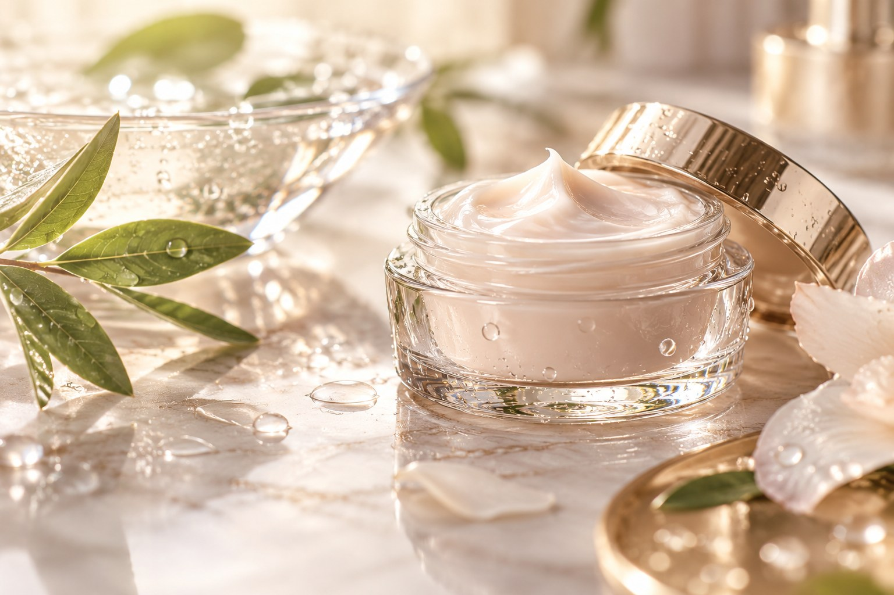
「インナードライ」って何？隠れ乾燥の見分け方
おでこや鼻はテカるのに、頬はつっぱる。そんな肌は、表面ではなく内側が乾いている「インナードライ」かもしれません。見分け方と、原因、毎日のケアで気をつけたいことをまとめました。
休日のリセット習慣。心とからだを整える
忙しい毎日のあとの休日は、心とからだを整えるための大切な時間。三枝が休日に心がけている、睡眠やお風呂、何もしない時間の過ごし方についてお話しします。
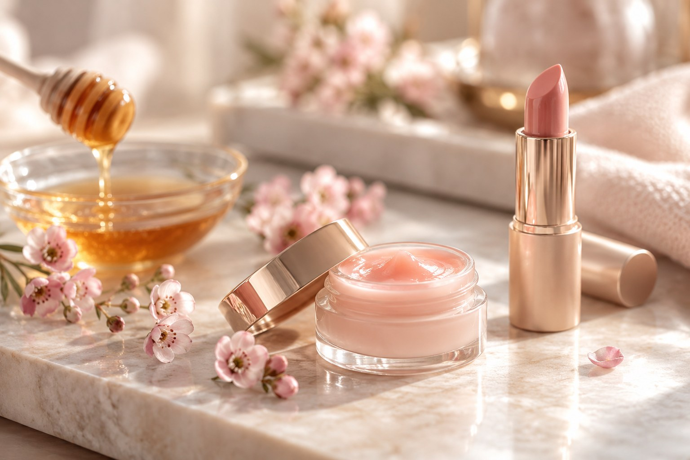
カサカサ唇にさようなら。秋のリップケア
空気が乾きはじめると、真っ先にカサつきやすいのが唇。なめる、皮をむく、こする。その何気ないくせが、荒れを長引かせているかもしれません。秋から始めたい、やさしいリップケアの基本をまとめました。
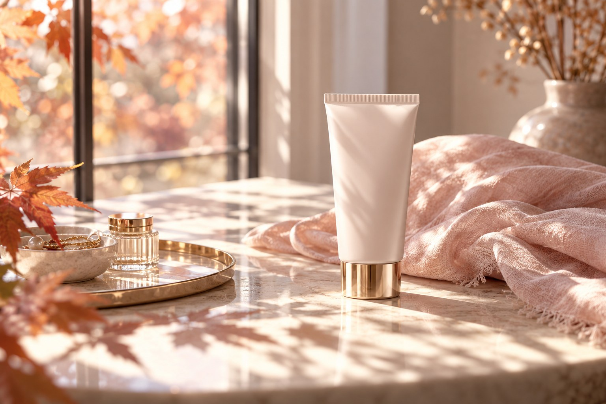
秋冬も日焼け止めは必要？紫外線の基礎知識
夏が終わると、日焼け止めをお休みしていませんか。紫外線は季節や天気に関係なく、一年中降りそそいでいます。秋冬こそ知っておきたい紫外線の基礎知識と、無理なく続けるUVケアのコツをお伝えします。
秋は見直しどき。スマホ・サブスクの固定費チェック
毎月なんとなく払い続けているスマホ代やサブスク。一度見直すだけで、その後ずっと効いてくるのが固定費の良いところです。秋のうちにやっておきたい、やさしいチェックの手順をまとめました。
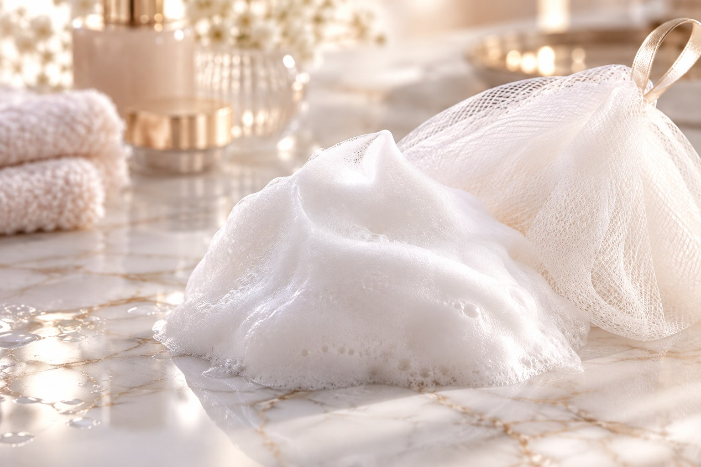
毛穴が気になる人へ。やりすぎないお手入れの基本
鏡を見るたびに気になってしまう毛穴。つい押し出したり、こすったりしていませんか。毛穴ケアの近道は、実は「やりすぎない」こと。保湿と角質ケアを軸にした、やさしいお手入れの基本をお伝えします。
衣替えと一緒に。スキンケアの秋冬シフト
洋服を秋冬ものに入れ替えるこの季節は、スキンケアを見直すちょうどいいタイミング。夏と同じお手入れのままでは、肌が乾きやすくなることも。テクスチャーを少しずつ変えていく、秋冬シフトのコツをまとめました。
最近のマイブーム、あたたかい飲み物のこと
肌寒くなってきたこのごろ、あたたかい飲み物を楽しむのが私のマイブームです。朝の白湯、夜のハーブティー。からだがほっとゆるむ、ささやかな習慣についてお話しします。
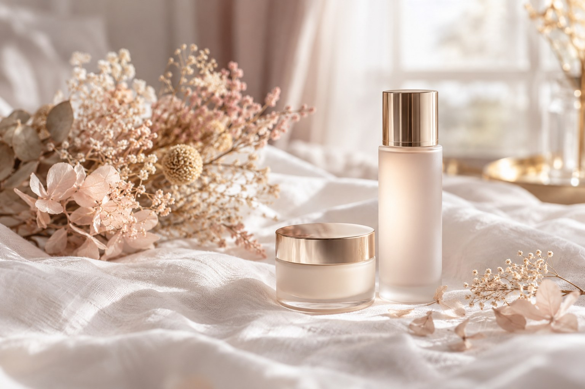
季節の変わり目の"ゆらぎ肌"。いつものケアで乗り切るコツ
いつもの化粧水がしみる、なんだかムズムズする。季節の変わり目は、肌がゆらぎやすい時期です。新しいことを足すより、刺激を減らしてシンプルに整えるコツをまとめました。
お気に入りのカフェ③ 地下の隠れ家「カフェ キャラット」
中目黒のお気に入りのカフェ、3軒目はアンティーク調のソファでくつろげる隠れ家のようなお店「Cafe Carat（カフェ キャラット）」です。
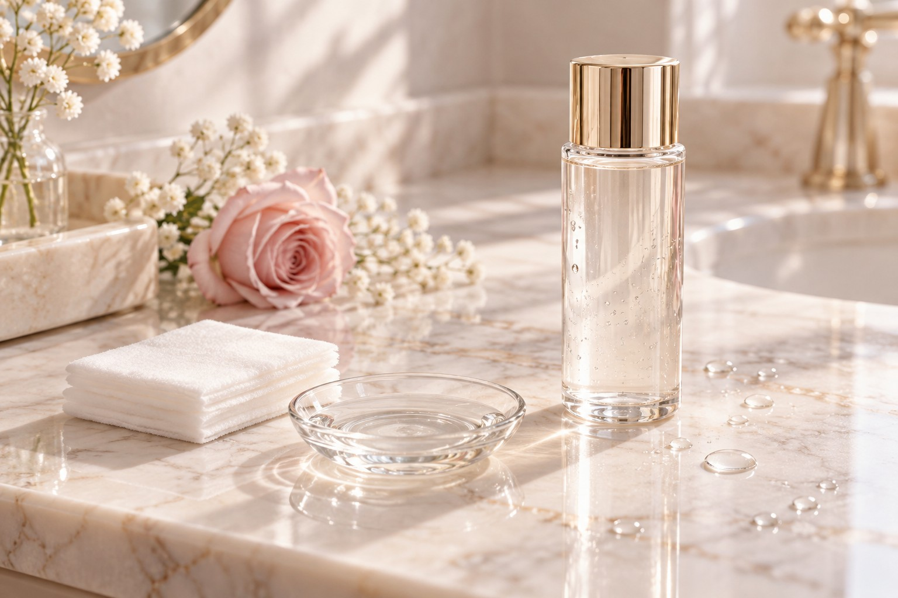
化粧水は"量"より"入れ方"。浸透を上げるコツ
たっぷり使っているのに、なぜか肌がしっとりしない。そんなときは「入れ方」を見直すチャンスかもしれません。数回に分けてなじませる方法と、ハンドプレスのコツをご紹介します。
お気に入りのカフェ② 自家焙煎コーヒーの「カフェ ファソン」
中目黒のお気に入りのカフェ、2軒目は自家焙煎のスペシャルティコーヒーが楽しめる「CAFÉ FAÇON（カフェ ファソン）中目黒本店」です。
お気に入りのカフェ① パンもドリンクも主役「dacō 中目黒」
中目黒で私がよく立ち寄るお気に入りのカフェをご紹介します。1軒目は、福岡の人気ベーカリー「アマムダコタン」が手がけるベーカリーカフェ「dacō（ダコー）中目黒」です。
高級デパコスでも、肌がつっぱる理由。花嫁さまの肌から考えるスキンケアの選び方
誰もが知る高級デパコスを使っていたのに、肌はつっぱり、赤みと乾燥が続いていた――。ご結婚式を控えた花嫁さまの肌から見えてきた、化粧品選びで本当に大切なことをお伝えします。
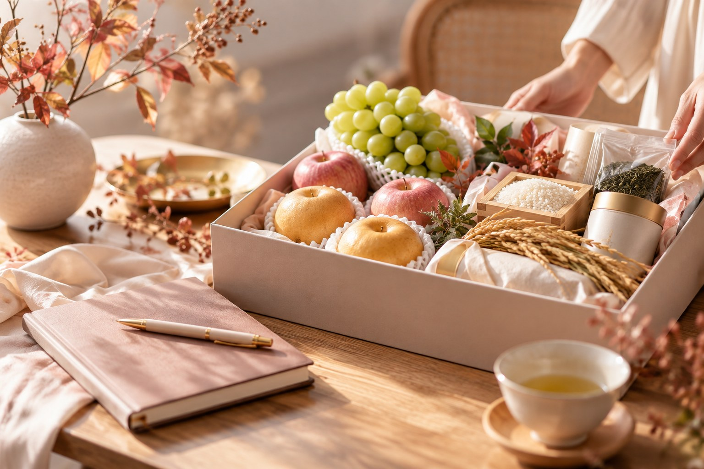
年内に済ませたい、ふるさと納税の3ステップ
ふるさと納税の仕組みと、年内にやることを3つのステップにまとめました。上限の調べ方、寄附の期限、手続きの選び方まで。
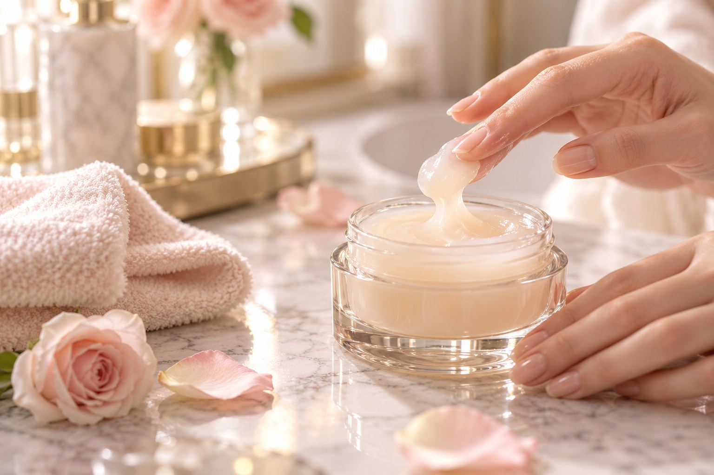
摩擦レスがすべて。正しいクレンジングの選び方と使い方
毎日のクレンジング、つい指に力が入っていませんか。肌をいたわる鍵は「こすらないこと」。自分に合う選び方と、摩擦を減らす使い方のコツをまとめました。
乾燥が始まる前に。10月からの"保湿の重ね方"
空気が少しずつ乾いてくる10月は、保湿の見直しどき。同じアイテムでも「重ねる順番」と「ふたの仕方」を変えるだけで、肌のうるおいの続き方が変わります。
中身はなんと、通常の2倍量。グランスキンのクレンジング＆洗顔
リアボーテ最高峰グランスキンのクレンジングと洗顔。中身は通常の約2倍量で、買い足す手間から解放されます。大好評でクレンジングはついに残り1点、次回入荷は未定です。
夏のダメージをリセット。秋にこそ始めたい肌の"立て直し"
夏の紫外線と冷房で肌はそっと疲れています。ゆらぎやすい秋を、あなたの肌が生まれ変わる季節に。今日から始めたい3つのケアをご紹介します。